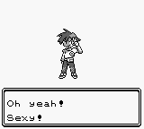

Welcome to benlorenzetti.com
I am terrible at introducing myself electronically.
The first time this happened was on Pokemon Red version. In a fit of creativity, I named my character Ben. My starter and rival fared worse; I think they were named "???" and "UNKNOWN". I took the naming prompts a little to literally. [1][2]
Since then, disappointing electronic introductions have become a trend.
The first time I ever called a girl was a catastrophe. Her family subscribed to a voice-to-screen, screen-to-voice telephone service provided by the great state of Ohio. First, I had to talk to a grown man on the other end of the line. He would type in whatever I asked him to say. Then, she could type back and he would repeat it back to me...in whatever was the tone of the day. I also had to speak in semantic control words, saying certain phrases like "wait, hold on. No wait, please delete wait, hold on..." sporatically throughout my speach. It was the awkwardest and most terrifying experience of my life. [3]
Another example of me and terrible electronic introductions: when I play laser tag. I am always that guy--the one who picks a vest name so lame, he is actually happy not achieving the top-players list.
So now it is time to break the trend of poor introductions. Hi, I'm Ben and welcome to my blog. This is where I will share with you the thoughts on my mind and the goals I am working towards. Because I want this blog to be professional as well as personal, you can view my resume here. Otherwise, these bullets summaraize what you need to know:
- I am an engineering student at the University of Cincinnati. I think it should be called engineering, not electrical engineering.
- I'm cutting-edge, because I texted via phone before people texted via phone (see above).
- I am on book 5 in A Song of Fire and Ice. If I ever write a feudal fantasy series, it will be titled Sandarac.
- One day, I hope to free the world from the limitations of current condiment dispensing technologies
- After achieving that, I hope to become a cereal entreprenuer (yes, like Kellog. Or Ochocinco. Breakfast is the best meal of the day).
I hope you enjoy my blog and learn something new, or enjoy it and teach me if I'm wrong. Feel free to contact me at ben.lorenzetti@gmail.com (especially if you want to hire me as a coop).
[1] Please ignore the invited comparison to my domain name.
[2] Unfortunately, pokemon does not have a naming guru for people.
[3] The most terrifying experience of my life was almost the day the wild goose landed in Praries Pool. Luckily, however, all of the lifeguards had received special training for just such circumstances.